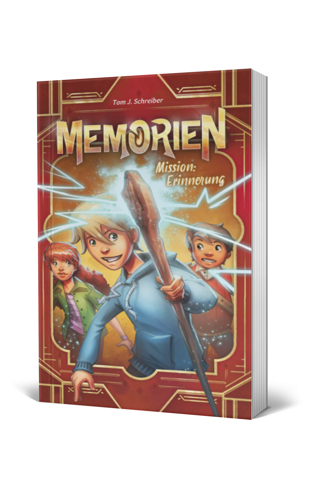

Memorien - Mission: Erinnerung
Flynn wünscht sich nichts sehnlicher, als dass sich sein Vater daran erinnert, was ihm als Kind wichtig war. Dann würde er vielleicht mal wieder Zeit mit ihm verbringen und sich nicht nur mit seiner blöden Arbeit beschäftigen. Natürlich greift Flynn sofort zu, als er die Chance bekommt, mit seinem besten Freund, Konrad, nach Memorien zu reisen, um das Problem zu lösen.
Du kennst Memorien nicht?
Dann solltest du die Warnungen besser ernst nehmen und sie nicht in den Wind schlagen, so wie Flynn und Konrad es getan haben. Andererseits wären sie sonst nie in dieses Abenteuer geraten, und du auch nicht! Aber aufgepasst! Es ist alles andere als sicher, dass du jemals aus Memorien zurückkehren kannst!
Außerdem erhältlich bei Ihrem Lieblingsbuchhändler.
Widmungswunsch senden